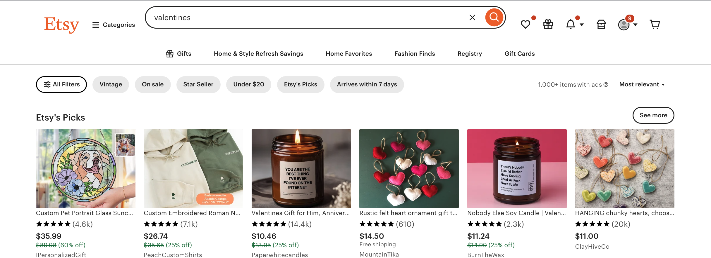

First Impressions
For two decades now, Etsy has offered small craftsmen and artists a digital platform for selling handmade goods. Especially earlier on, Etsy offered shoppers a similar experience to that of a craft fair – shoppers meandered through listings looking for something that caught their eye. Etsy search was not particularly accurate or useful, which meant that first impressions mattered a lot.
Etsy search is page after page of tiny hero images.
A/B Tests
When I joined Fourth Wave Apparel’s marketing team, I immediately asked myself how I could make the most of those first impressions. The first A/B test I conducted was to find out which color t-shirt mockup resulted in the highest conversion rate.
I started with several important pieces of information gleaned from Etsy Stats data (Etsy’s built-in data analysis tool):
- The most often purchased color for each t-shirt was the color shown in the main image for that listing. A blue mockup sold blue tees, a red mockup sold red tees, etc.
- Based on our blank t-shirt orders, our most popular colors were gray/darkgray, red, blue, and pink.
My Questions
- Was there a certain color mockup that had a higher conversion rate than other colors?
- Were certain designs not selling as well because the mockup showed the design on a t-shirt color that people didn’t want to wear?
The Test
I used data from Etsy stats to roughly categorize our t-shirts into best-sellers, mid-tier, and lower volume products. Then I created duplicate listings for the top 15 from each category with just one change – the shirt color in the main listing image.
Two of our top sellers that we listed in gray/darkgray, red, blue, and pink.
We let this test run for 6 months in order to account for Etsy’s practice of bumping new listings to the top of search for hours to days simply because they’re new and then dropping them in rank for several weeks as they gained organic traction.
We watched the conversion rate for all listings we were testing. After 6 months, the results were in – the color that resulted in the highest conversion rate across all our test listings?
Gray.
How boring, right?
But, it makes sense. As the modeling industry knows, people buy clothes they can see themselves wearing. The color of the shirt, just like the model wearing the outfit, needs to be neutral enough to blend into the background.
Getting Click-Through from the Right Customers
This didn’t mean everyone purchased gray shirts in the end, just that the gray seemed to get clicks from the right customers. Our t-shirt designs were intentionally bold and controversial, aimed at a niche audience. A gray mockup allowed the designs rather than the shirt color to be the focal point of our ads, which meant we got fewer click throughs from customers who liked the color but didn’t complete the purchase because they were put off by the design in the end.
The Outcome
This test was one of a suite of tests I conducted during my first year at Fourth Wave Apparel, and within 18 months, I had more than doubled sales and bumped the shop into the top 1% of Etsy sellers in terms of search rank and sales.